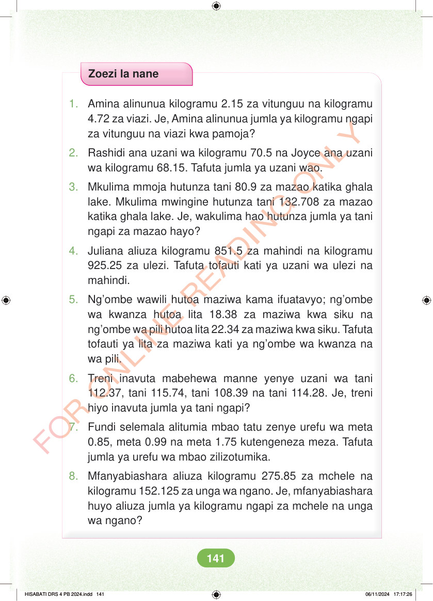

<!DOCTYPE html>
<html lang="sw-TZ"><head><meta charset="utf-8"><meta name="viewport" content="width=device-width,initial-scale=1">
<title>Hisabati: Kitabu cha Mwanafunzi Darasa la Nne</title>
<meta name="title-id" content="pg147_sec001"><meta name="page-section-id" content="154">
<link href="./content/tailwind_output.css" rel="stylesheet"><link href="./assets/libs/fontawesome/css/all.min.css" rel="stylesheet"><link href="./assets/fonts.css" rel="stylesheet">
<style>body{margin:0;background:#eef1ed}main{width:100%;display:flex;justify-content:center;padding:1rem 1rem 5rem;box-sizing:border-box}#content{width:100%;display:flex;justify-content:center}.pdf-page{position:relative;width:min(calc(100vw - 2rem),56rem);aspect-ratio:540.8980102539062/750.6610107421875;background:white;box-shadow:0 4px 24px #0002;overflow:hidden}.pdf-page img{position:absolute;inset:0;width:100%;height:100%;object-fit:fill}</style>
</head><body><main><h1 class="sr-only" id="page-heading">Ukurasa wa 147</h1><div id="content" class="opacity-0"><section role="article" data-section-type="pdf_accessible_page" data-section-id="pg147_sec001" aria-labelledby="page-heading" class="pdf-page"><p class="sr-only" data-id="pg147_gp001_tx001">Zoezi la nane 1. Amina alinunua kilogramu 2.15 za vitunguu na kilogramu 4.72 za viazi. Je, Amina alinunua jumla ya kilogramu ngapi za vitunguu na viazi kwa pamoja? 2. Rashidi ana uzani wa kilogramu 70.5 na Joyce ana uzani wa kilogramu 68.15. Tafuta jumla ya uzani wao. 3. Mkulima mmoja hutunza tani 80.9 za mazao katika ghala lake. Mkulima mwingine hutunza tani 132.708 za mazao katika ghala lake. Je, wakulima hao hutunza jumla ya tani ngapi za mazao hayo? 4. Juliana aliuza kilogramu 851.5 za mahindi na kilogramu 925.25 za ulezi. Tafuta tofauti kati ya uzani wa ulezi na mahindi. 5. Ng’ombe wawili hutoa maziwa kama ifuatavyo; ng’ombe wa kwanza hutoa lita 18.38 za maziwa kwa siku na ng’ombe wa pili hutoa lita 22.34 za maziwa kwa siku. Tafuta tofauti ya lita za maziwa kati ya ng’ombe wa kwanza na wa pili. 6. Treni inavuta mabehewa manne yenye uzani wa tani 112.37, tani 115.74, tani 108.39 na tani 114.28. Je, treni hiyo inavuta jumla ya tani ngapi? 7. Fundi selemala alitumia mbao tatu zenye urefu wa meta 0.85, meta 0.99 na meta 1.75 kutengeneza meza. Tafuta jumla ya urefu wa mbao zilizotumika. 8. Mfanyabiashara aliuza kilogramu 275.85 za mchele na kilogramu 152.125 za unga wa ngano. Je, mfanyabiashara huyo aliuza jumla ya kilogramu ngapi za mchele na unga wa ngano? HISABATI DRS 4 PB 2024.indd 141 HISABATI DRS 4 PB 2024.indd 141 06/11/2024 17:17:26 06/11/2024 17:17:26</p></section></div></main><div class="relative z-50" id="interface-container"></div><div class="relative z-50" id="nav-container"></div><script src="./assets/offline-preloader.js?v=audiofix-20260824-1"></script><script src="./assets/scorm.js"></script><script src="./assets/base.bundle.local.js?v=audiofix-20260824-1"></script></body></html>